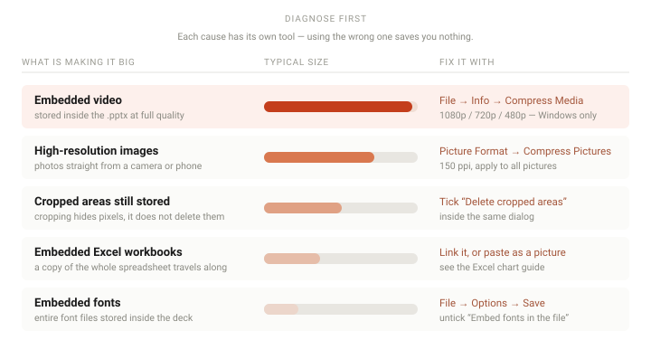

To compress a PowerPoint file: use File → Info → Compress Media to shrink embedded video (Windows only — Mac has no equivalent), and Picture Format → Compress Pictures to shrink images. In the Compress Pictures dialog, untick Apply only to this picture so it covers the whole deck, and tick Delete cropped areas of pictures — that checkbox is the one people miss.
Before compressing anything, find out what is actually making the file big. Compressing images in a deck whose size comes from video will save you almost nothing, and vice versa. This takes one minute and saves guessing.
Step by step
-
Find out what is actually making it large
File → Info shows a Media Size figure if the deck contains audio or video. If that number is most of your file size, video is your problem and images are irrelevant.
For a full breakdown, use the fact that a
.pptxis really a zip archive. Copy the file, rename the copy to end in.zip, and open it. Everything lives in appt/media/folder, sorted by size. That folder is almost always the entire story.If you would rather not rename anything, the file size checker does the same inspection without touching the file — it reads the archive in your browser and lists what is inside, largest first. Knowing which of the causes below applies is the difference between a fix that works and an afternoon spent compressing the wrong thing.
Do this on a copy. Renaming the original to .zip is harmless, but you will want the .pptx openable while you investigate.
-
Compress embedded video
Go to File → Info → Compress Media and pick a quality preset:
Full HD (1080p) — barely smaller, keeps quality.
HD (720p) — the usual sweet spot. Roughly half the size of 1080p and still sharp on most projectors.
Standard (480p) — dramatically smaller, visibly softer on a big screen.This re-encodes the video stored inside the file. It is permanent — there is no undo, so keep the original if you might need the quality back.
Compression also strips any embedded subtitles and alternate audio tracks from the video. If the deck has captions burned in as a separate track, they will be gone afterwards and the video will no longer be accessible to anyone relying on them. Check before you compress, and keep the original if it matters.
Compress Media is a Windows feature. PowerPoint for Mac does not have it — there is no equivalent menu, and File → Info on Mac shows no Media Size figure either. On a Mac, video has to be compressed before you insert it, using an external tool, and then embedded as a normal file. Compress Pictures, below, does exist on both platforms.
-
Compress the images
Select any picture on a slide, then go to Picture Format → Compress Pictures. Selecting it first is not optional: Picture Format is a contextual tab that only appears once something on the slide is selected, so the command looks missing until you click an image. On a Mac there is no other route to it.
Two controls in that dialog matter:
Apply only to this picture — untick this. Left ticked, the setting applies to the one image you selected, which is why people compress and see no change.
Delete cropped areas of pictures — tick this. See the next section, because it is the single highest-value checkbox in the dialog.For output resolution, 150 ppi is usually indistinguishable on a projector and much smaller than the default 220 ppi. Use 96 ppi only if the deck will never be shown on a large screen.
-
Delete the cropped areas — the part most people miss
Cropping an image in PowerPoint hides the pixels outside the frame. It does not delete them. A photo you cropped to a tenth of its width is still stored in the file at full size.
This is why decks assembled from photos stay enormous no matter how much you crop. The Delete cropped areas of pictures checkbox in Compress Pictures is what actually discards them.
It is destructive. Once the cropped areas are deleted, you cannot un-crop back to the original framing. Do this near the end, once your layouts are final.
-
Remove unused slide masters and layouts
Go to View → Slide Master. A deck that has been through several hands often carries multiple masters and a dozen layouts, all of which are stored in the file.
Select the layout in the thumbnail pane, then on the Slide Master tab click Delete. This usually saves less than video or images, but on a heavily-reworked deck it can be surprising — and it makes the New Slide gallery usable again. PowerPoint will also offer to do it for you: open a deck carrying 25 or more masters with some of them unused, and it asks whether to remove the unused ones.
-
Drop embedded fonts you do not need
File → Options → Save, and look at Embed fonts in the file. If it is ticked, PowerPoint is storing entire font files inside your presentation — often several megabytes each.
Untick it unless the deck genuinely depends on a font your audience may not have. If you do need it, choose Embed only the characters used rather than the full font.
-
Save as a new file
Use File → Save As and save under a new name rather than overwriting, so you still have the original to fall back on. The leftover data itself is a separate setting: File → Options → Advanced → Discard editing data throws away what PowerPoint stores so it can restore an image to its original state after you have edited it. That is the lever Microsoft documents by name for this, and on a deck with a lot of retouched pictures it is worth more than the save itself.
Also check the format. If the file is somehow still a legacy
.ppt, saving as.pptxalone can cut the size substantially — the old binary format is far less efficient.

When it does not work
- Compress Media is greyed out The presentation has no embedded video, so there is nothing for it to act on. Videos added as online links are not stored locally. Your size problem is somewhere else — most likely images.
- The file is still enormous after compressing everything Check for embedded Excel workbooks: a chart pasted as an embedded object carries a copy of the whole spreadsheet inside the deck. See how to embed an Excel chart for the options that keep the file small. Embedded fonts are the other usual culprit.
- Compress Pictures is greyed out or you cannot find it Nothing is selected. The command lives on the Picture Format tab, and that tab only appears once a picture on a slide is selected — on a Mac this catches people constantly, because there is no visible menu entry to hunt for beforehand. Click the image itself, then look again. Selecting a shape, a text box or a group will not bring the tab up; it has to be an actual picture.
- Compress Pictures seems to do nothing You almost certainly left Apply only to this picture ticked, so it compressed the single image you had selected and nothing else. Untick it and run it again.
- The images look soft or blocky afterwards You went too low, or you compressed twice. Re-insert the affected images from the originals and compress once at 150 ppi. Compression is permanent once you save, so working from a backup copy is the reliable route.
- I cannot get it below the size I need If the deck contains several minutes of embedded video, there is a floor you cannot compress past without visibly wrecking it. At that point, share a link instead of an attachment — upload to OneDrive, Google Drive or Dropbox and send the URL. That is faster and loses nothing.
Frequently asked questions
- Why is my PowerPoint file so large?
-
Embedded video first, high-resolution images second. Beyond those: cropped images still
carrying their hidden pixels, embedded Excel workbooks, and embedded fonts. The
ppt/media/folder inside the file tells you which in about a minute. - Does cropping an image reduce the PowerPoint file size?
- No. Cropping only hides the pixels outside the visible frame — the originals stay in the file. Tick Delete cropped areas of pictures in Compress Pictures to actually remove them.
- Does compressing a PowerPoint file reduce the image quality?
- It can, and the change is permanent because the images are re-encoded inside the file. Keep a copy of the uncompressed version if you might need the quality later. 150 ppi is normally indistinguishable on a projector.
- Why is Compress Media greyed out?
- There is no embedded video in the file. Compress Media only affects video stored inside the presentation. Online-linked videos live on YouTube's servers, so there is nothing local to compress.
- Why is Compress Pictures greyed out?
- Usually because no picture is selected. Compress Pictures sits on the Picture Format tab, which only appears once a picture on a slide is selected. On a Mac this catches people out because there is no menu entry visible beforehand — you have to click the image first, then look. Selecting a shape, a text box or a group will not bring the tab up, and neither will selecting a picture's placeholder rather than the picture itself.
- Is there a size limit for emailing a PowerPoint file?
- Most providers cap attachments somewhere between 20 and 25 MB. Past that, send a link instead — upload the deck to OneDrive, Google Drive or Dropbox. It is faster than compressing, and it preserves the original quality.
Official references
- Compress your media files The Compress Media presets, what each one does to quality, and Microsoft's own statement that the feature is available in PowerPoint for Windows but not on Mac or the web.
- Reduce the file size of your PowerPoint presentations Microsoft's official guidance on each size lever, including embedded fonts and discarding image editing data.
- Reduce the file size of a picture in Microsoft Office Compress Pictures, the resolution targets, and discarding cropped areas.